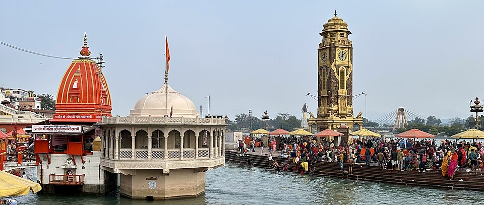
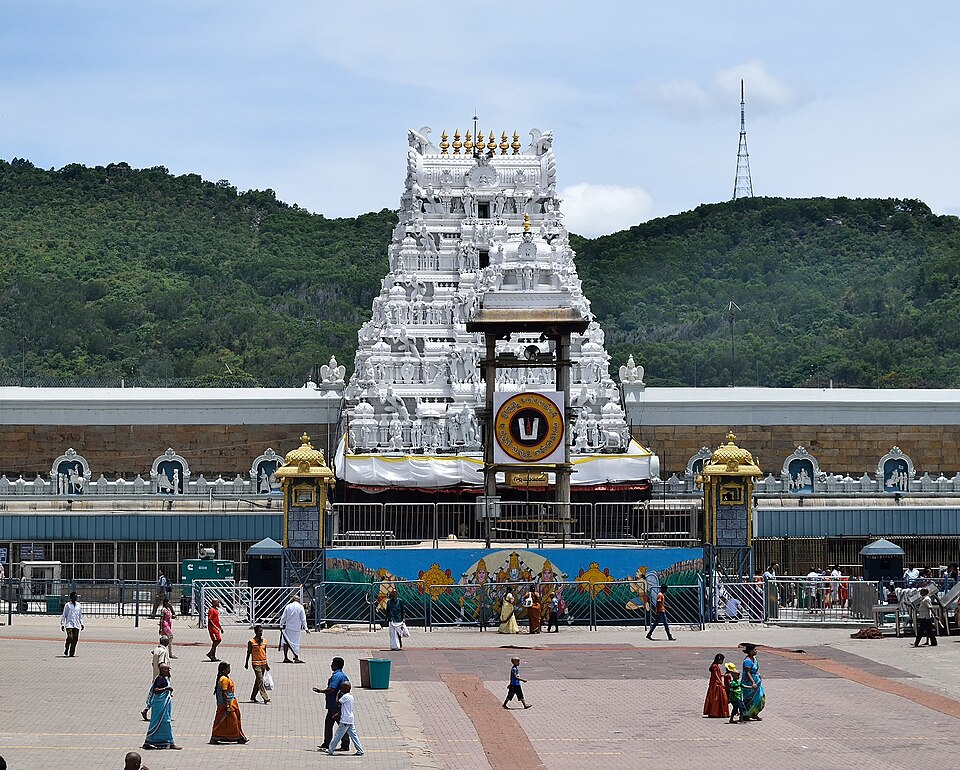
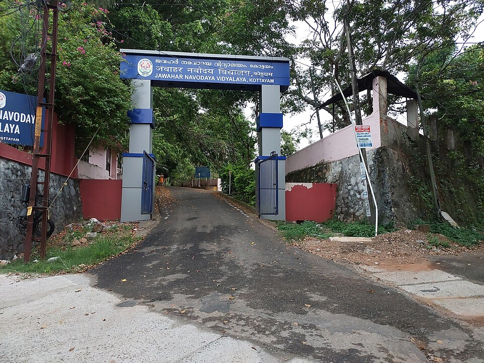
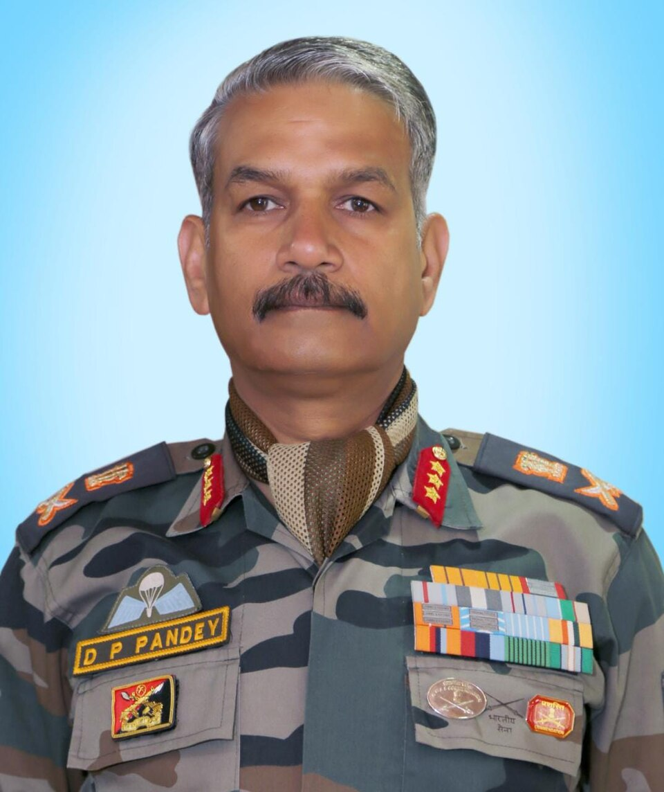
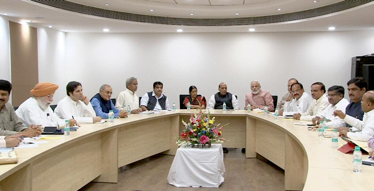

राष्ट्रीय
 राष्ट्रीय
राष्ट्रीयपरिसीमन विधेयक पर कार्ति चिदंबरम के संकेत, बदल सकता है डीएमके और एनसीपी-एसपी का रुख
कांग्रेस सांसद कार्ति चिदंबरम ने परिसीमन विधेयक को लेकर डीएमके और एनसीपी-एसपी के रुख में संभावित बदलाव के संकेत दिए हैं। उन्होंने सोशल मीडिया पर पोस्ट कर यह बात कही।

राष्ट्रीयउत्तराखंड के हरिद्वार में साल 2027 में होगा अर्धकुंभ का आयोजन
उत्तराखंड के हरिद्वार में वर्ष 2027 के अर्धकुंभ मेले की तैयारियां शुरू हो गई हैं। यह आयोजन 14 जनवरी से 20 अप्रैल तक प्रस्तावित है, जिसमें चार अमृत स्नान समेत कई प्रमुख स्नान पर्व होंगे।
राष्ट्रीयपरिसीमन बिल पर डीएमके दे सकती है मोदी सरकार का समर्थन, कांग्रेस सांसद ने किया दावा
कांग्रेस सांसद मनोज कुमार ने दावा किया है कि डीएमके परिसीमन बिल पर कुछ शर्तों के साथ केंद्र सरकार का समर्थन कर सकती है। इस मामले में अंतिम फैसला 30 नवंबर तक लिया जाएगा।
राष्ट्रीयगुजरात के वडोदरा से जैश-ए-मोहम्मद का संदिग्ध आतंकी गिरफ्तार, हथियार बरामद
गुजरात एटीएस ने वडोदरा से जैश-ए-मोहम्मद से जुड़े एक संदिग्ध आतंकी को गिरफ्तार किया है। आरोपी के पास से एक राइफल और 20 से अधिक जिंदा कारतूस बरामद किए गए हैं, और फिलहाल उससे पूछताछ जारी है।
राष्ट्रीयYSRCP ने परिसीमन विधेयक का समर्थन करने के दिए संकेत, रखी एक शर्त
YSRCP ने संसद में परिसीमन विधेयक का समर्थन करने की इच्छा जताई है, बशर्ते क्षेत्रीय संतुलन सुनिश्चित करने के लिए उचित सुरक्षा उपाय किए जाएं।
 राष्ट्रीय
राष्ट्रीयगुजरात की डॉली वडालिया को 26 साल की उम्र में मिला भारतीय पासपोर्ट
मोज़ाम्बिक में जन्मीं और 25 दिन की उम्र से भारत में रह रहीं डॉली वडालिया को कानूनी अड़चनों के बाद आखिरकार भारतीय नागरिकता और पासपोर्ट मिल गया है।
 राष्ट्रीय
राष्ट्रीयसुप्रीम कोर्ट ने सीबीएसई छात्रों को दी राहत, मौजूदा भाषा विकल्प जारी रखने की अनुमति
सुप्रीम कोर्ट ने स्पष्ट किया है कि सीबीएसई स्कूलों के छात्र अपनी मौजूदा दो या तीन भाषाओं की पसंद को जारी रख सकते हैं। कोर्ट ने कहा कि नई नीति के तहत छात्रों पर भाषा बदलने का दबाव नहीं डाला जा सकता।
राष्ट्रीयअमिताभ बच्चन के आवास 'जलसा' और दिलजीत दोसांझ के कॉन्सर्ट को बम से उड़ाने की धमकी
बॉलीवुड अभिनेता अमिताभ बच्चन के बंगले 'जलसा' और गायक दिलजीत दोसांझ के मुंबई कॉन्सर्ट को ईमेल के जरिए बम से उड़ाने की धमकी मिली है, जिसके बाद सुरक्षा बढ़ा दी गई है।
राष्ट्रीयसंसद के विशेष सत्र से पहले आज केंद्रीय कैबिनेट की बैठक, महिला आरक्षण और परिसीमन पर चर्चा संभव
प्रधानमंत्री नरेंद्र मोदी की अध्यक्षता में आज केंद्रीय कैबिनेट की बैठक होगी। 30 नवंबर से शुरू होने वाले संसद के विशेष सत्र में महिला आरक्षण और परिसीमन से जुड़े विधेयक पेश किए जा सकते हैं।
राष्ट्रीयउत्तर प्रदेश चुनाव: चंद्रशेखर और ओवैसी के 'सामाजिक परिवर्तन मोर्चा' की पहली साझा रैली
संविधान दिवस के मौके पर लखनऊ में चंद्रशेखर आज़ाद और असदुद्दीन ओवैसी ने 'सामाजिक परिवर्तन मोर्चा' के तहत पहली साझा रैली की। इस दौरान दोनों नेताओं ने भाजपा और सपा पर निशाना साधा।
 राष्ट्रीय
राष्ट्रीयशाहरुख खान की आगामी फिल्म किंग का रनटाइम 3 घंटे 17 मिनट तय
बॉलीवुड अभिनेता शाहरुख खान की आने वाली फिल्म किंग का रनटाइम 3 घंटे 17 मिनट होगा। इसके साथ ही यह उनके करियर की लंबी फिल्मों में शामिल हो जाएगी।
राष्ट्रीयहिमाचल प्रदेश की देव परंपरा पर अंतरराष्ट्रीय शोध, बखाण अनुष्ठान में भविष्यवाणियों का अध्ययन
अंतरराष्ट्रीय शोध पत्रिका में हिमाचल प्रदेश के ऊपरी शिमला क्षेत्र की देव परंपरा और बखाण अनुष्ठान पर अध्ययन प्रकाशित हुआ है। इसमें मौसम, महामारी और कृषि से जुड़ी भविष्यवाणियों का जिक्र है।
राष्ट्रीयJEE Main 2027: जनवरी सत्र के आवेदन में सुधार की सुविधा आज से शुरू
नेशनल टेस्टिंग एजेंसी आज से जेईई मेन 2027 जनवरी सत्र के आवेदन पत्र में सुधार की सुविधा शुरू कर रही है। पंजीकृत उम्मीदवार 29 नवंबर तक आधिकारिक वेबसाइट पर जाकर जरूरी बदलाव कर सकते हैं।
राष्ट्रीयउत्तर भारत में शीतलहर और घने कोहरे का प्रकोप, 13 राज्यों में मौसम विभाग का अलर्ट
देशभर में ठंड बढ़ने के साथ ही राजस्थान में शीतलहर और उत्तर भारत के 13 राज्यों में घने कोहरे का अलर्ट जारी किया गया है। वहीं, दक्षिण भारत के कुछ हिस्सों में बारिश की संभावना है।
राष्ट्रीयउत्तर प्रदेश में बीजेपी ने तेज की चुनावी घेराबंदी, सामाजिक समीकरण साधने में जुटे ब्रजेश पाठक
उत्तर प्रदेश विधानसभा चुनाव 2027 से पहले बीजेपी ने सामाजिक समीकरणों को मजबूत करने के लिए संपर्क अभियान तेज कर दिया है। डिप्टी सीएम ब्रजेश पाठक के नेतृत्व में लखनऊ में दो दिवसीय बैठक आयोजित की गई।
राष्ट्रीयसंसद का विशेष सत्र बुलाए जाने पर कांग्रेस ने जताई आपत्ति
केंद्र सरकार द्वारा संसद का विशेष सत्र बुलाए जाने के फैसले पर कांग्रेस ने तीखी प्रतिक्रिया दी है। पार्टी नेताओं ने इसे संविधान और संसद की गरिमा के खिलाफ बताया है।
राष्ट्रीयअखिलेश यादव ने आजम खान को एयरपोर्ट छोड़ा, यूपी चुनाव से पहले सियासी संकेत
उत्तर प्रदेश विधानसभा चुनाव से पहले समाजवादी पार्टी प्रमुख अखिलेश यादव ने आजम खान को खुद अपनी गाड़ी से एयरपोर्ट पहुंचकर विदा किया, जिसे एक बड़े राजनीतिक संकेत के रूप में देखा जा रहा है।
राष्ट्रीयजाकिर नाइक के संगठन इस्लामिक रिसर्च फाउंडेशन पर कार्रवाई का अधिकार राज्यों को मिला
केंद्र सरकार ने जाकिर नाइक के प्रतिबंधित संगठन इस्लामिक रिसर्च फाउंडेशन के खिलाफ UAPA के तहत फंड और प्रॉपर्टी जब्त करने का अधिकार राज्य सरकारों को दे दिया है।
राष्ट्रीयहैदराबाद में कांग्रेस और BRS कार्यकर्ताओं के बीच झड़प, बिरयानी प्रोटेस्ट के दौरान हंगामा
तेलंगाना के हैदराबाद में कांग्रेस और BRS कार्यकर्ताओं के बीच हिंसक झड़प हो गई। BRS ने सरकारी नौकरियों के वादों को लेकर बिरयानी प्रोटेस्ट रखा था, जिसमें राहुल गांधी का पुतला दहन किया गया। KTR ने इस हमले की कड़ी निंदा की है।
राष्ट्रीयफिरोजाबाद में शादी के दौरान उधारी मांगने पहुंची युवती, हंगामा
उत्तर प्रदेश के फिरोजाबाद में एक शादी समारोह के दौरान गाजियाबाद से पहुंची युवती ने दूल्हे पर उधार दिए रुपये न लौटाने का आरोप लगाते हुए हंगामा किया। पुलिस के हस्तक्षेप के बाद दोनों पक्षों में समझौता हुआ।
राष्ट्रीयहैदराबाद में संविधान दिवस पर कांग्रेस और BRS कार्यकर्ताओं के बीच झड़प
तेलंगाना के हैदराबाद में संविधान दिवस पर कांग्रेस और BRS कार्यकर्ताओं के बीच झड़प हो गई। BRS नेता राहुल गांधी का पुतला रखकर बिरयानी प्रोटेस्ट कर रहे थे।
राष्ट्रीयसंसद सत्र से पहले प्रधानमंत्री नरेंद्र मोदी की अध्यक्षता में आज होगी कैबिनेट बैठक
संसद के आगामी सत्र से पहले प्रधानमंत्री नरेंद्र मोदी की अध्यक्षता में आज दोपहर केंद्रीय कैबिनेट की बैठक होगी। इसमें परिसीमन और महिला विधेयक पर चर्चा की संभावना है।
राष्ट्रीयबिहार: कटिहार में ग्रामीण कार्य विभाग के इंजीनियर के ठिकानों पर विजिलेंस की छापेमारी
बिहार के कटिहार में निगरानी विभाग ने ग्रामीण कार्य विभाग के कार्यपालक अभियंता अजीत कुमार दास के किराए के मकान पर छापेमारी की। जांच के दौरान जमीन के कई डीड और दस्तावेज बरामद हुए हैं।

राष्ट्रीयचेन्नई के दंपती ने तिरुमाला मंदिर में किया 121 किलोग्राम सोने का दान
चेन्नई के एक दंपती ने तिरुपति स्थित तिरुमाला वेंकटेश्वर मंदिर में 121 किलोग्राम सोना दान किया है, जिसकी बाजार में कीमत करीब ₹206 करोड़ बताई गई है।
राष्ट्रीयझारखंड के गिरिडीह में एक ही परिवार के आठ लोग अचानक बेहोश, धनबाद में भर्ती
झारखंड के गिरिडीह जिले में एक ही परिवार के आठ सदस्यों की अचानक तबीयत बिगड़ गई। चक्कर आने और बेहोशी के बाद सभी को धनबाद के अस्पताल में भर्ती कराया गया है, जहां डॉक्टरों की देखरेख में उनका इलाज जारी है।
राष्ट्रीयसंसद सत्र से पहले मोदी कैबिनेट की बैठक में परिसीमन विधेयक पर हो सकती है चर्चा
संसद के आगामी सत्र से पहले शुक्रवार को होने वाली केंद्रीय मंत्रिमंडल की बैठक में परिसीमन और महिला आरक्षण विधेयक पर चर्चा संभावित है।
राष्ट्रीयबंगाली अभिनेत्री मिमी चक्रवर्ती ने की सगाई, सोशल मीडिया पर साझा की तस्वीरें
बंगाली अभिनेत्री मिमी चक्रवर्ती ने एक अंतरंग समारोह में सगाई कर ली है। उन्होंने सोशल मीडिया पर रजिस्ट्री की तस्वीरें साझा की हैं, हालांकि मंगेतर का चेहरा छिपा रखा है।
राष्ट्रीय18 साल से हत्या के मामले में फरार आरोपी यूएई से भारत लाया गया
करीब 18 साल पुराने हत्या मामले में फरार चल रहे आरोपी सुजीत कुमार को इंटरपोल के रेड नोटिस के आधार पर यूएई से गिरफ्तार कर भारत लाया गया है।
 राष्ट्रीय
राष्ट्रीयआगरा के ताजमहल परिसर में बंदरों का आतंक, पर्यटकों में दहशत का माहौल
ताजमहल परिसर में बंदरों का जमावड़ा बढ़ने से पर्यटकों में चिंता और डर का माहौल है। सोशल मीडिया पर एक वीडियो वायरल हो रहा है जिसमें सैकड़ों बंदरों का झुंड नजर आ रहा है।
राष्ट्रीयहैदराबाद में बीआरएस का 'बिरयानी विरोध', कांग्रेस कार्यकर्ताओं के साथ झड़प
तेलंगाना के हैदराबाद में राहुल गांधी के वादों को लेकर बीआरएस और कांग्रेस कार्यकर्ताओं के बीच झड़प हो गई। बीआरएस नेताओं ने तीन साल पहले के दौरे की बरसी पर अनोखा प्रदर्शन किया।
राष्ट्रीयपश्चिम बंगाल: ममता बनर्जी के भाई स्वपन बनर्जी ने अभिषेक बनर्जी के खिलाफ की FIR की मांग
पश्चिम बंगाल की मुख्यमंत्री ममता बनर्जी के भाई स्वपन बनर्जी उर्फ बाबुन ने अपने भतीजे अभिषेक बनर्जी पर धमकाने और रक्तदान शिविर रोकने का आरोप लगाते हुए कोलकाता के कालीघाट थाने में FIR की मांग की है।
राष्ट्रीयसंसद के आगामी सत्र से पहले परिसीमन के मुद्दे पर कांग्रेस ने उठाए सवाल
संसद के आगामी सत्र से पहले कांग्रेस ने शरद पवार और एमके स्टालिन के रुख को लेकर सवाल उठाए हैं। कार्ति चिदंबरम और माणिकम टैगोर के बयानों से राजनीतिक हलकों में चर्चा तेज हो गई है।
राष्ट्रीयतहसीन पूनावाला ने नेटफ्लिक्स को दी चेतावनी, पाकिस्तानी सीरीज के भारत में प्रसारण का विरोध
राजनैतिक विश्लेषक तहसीन पूनावाला ने नेटफ्लिक्स की पाकिस्तानी सीरीज 'जो बच्चे हैं संग समेट लो' के भारत में रिलीज होने पर कड़ा विरोध जताया है।
राष्ट्रीयजलगांव के मजदूर के बेटे भूषण ठाकरे ने 'कौन बनेगा करोड़पति' में जीते एक करोड़ रुपये
महाराष्ट्र के जलगांव के रहने वाले 28 वर्षीय भूषण ठाकरे ने लोकप्रिय गेम शो 'कौन बनेगा करोड़पति' में एक करोड़ रुपये जीते हैं। यूपीएससी की तैयारी कर रहे भूषण ने लगभग एक दशक के संघर्ष के बाद यह सफलता हासिल की है।
राष्ट्रीयमहाराष्ट्र के भूषण ठाकरे ने कौन बनेगा करोड़पति में जीते एक करोड़ रुपये
महाराष्ट्र के जलगांव के रहने वाले यूपीएससी अभ्यर्थी भूषण ठाकरे ने लोकप्रिय क्विज शो 'कौन बनेगा करोड़पति' में एक करोड़ रुपये की राशि अपने नाम की है।
राष्ट्रीयसंसद सत्र से पहले शुक्रवार को होगी केंद्रीय कैबिनेट की बैठक
30 नवंबर से शुरू हो रहे लोकसभा के विशेष सत्र से पहले शुक्रवार को केंद्रीय कैबिनेट की बैठक होगी, जिसमें परिसीमन से जुड़े महिला आरक्षण विधेयक पर चर्चा संभव है।
राष्ट्रीयमुंबई पुलिस ने कॉकरोच जनता पार्टी के नेताओं के खिलाफ जारी किया लुकआउट सर्कुलर
मुंबई पुलिस ने 2 अक्टूबर को शिवाजी पार्क में हुए प्रदर्शन के सिलसिले में कॉकरोच जनता पार्टी के तीन नेताओं के खिलाफ लुकआउट सर्कुलर जारी किया है।
राष्ट्रीयराहुल गांधी राजनीतिक दिखावे के लिए करते हैं संविधान का इस्तेमाल: अमित शाह
केंद्रीय गृह मंत्री अमित शाह ने दिल्ली में एक कार्यक्रम के दौरान कांग्रेस नेता राहुल गांधी पर निशाना साधा। उन्होंने कहा कि संविधान की प्रति जेब में रखना या लहराना उसका सम्मान नहीं है।
 राष्ट्रीय
राष्ट्रीयश्रीनगर के लाल चौक पर कड़ी सुरक्षा के बीच मनाई गई दिवाली
जम्मू-कश्मीर के श्रीनगर स्थित लाल चौक पर कुछ लोगों द्वारा कड़ी सुरक्षा के बीच दिवाली मनाए जाने का मामला सामने आया है। इस दौरान स्थानीय स्तर पर धार्मिक आयोजनों और पाबंदियों को लेकर चर्चा शुरू हो गई है।
राष्ट्रीयसुधांशु त्रिवेदी ने समाजवादी पार्टी के 2027 घोषणापत्र पर उठाए सवाल
भाजपा नेता सुधांशु त्रिवेदी ने समाजवादी पार्टी के नए घोषणापत्र को महज एक औपचारिकता बताया है। उन्होंने विपक्षी दलों पर वादे पूरे न करने का आरोप लगाया है।
राष्ट्रीयमध्य प्रदेश: नागौद SDM सोमेश द्विवेदी और ब्यौहारी SDM अर्चना मिश्रा परिणय सूत्र में बंधे
मध्य प्रदेश के नागौद SDM सोमेश द्विवेदी और ब्यौहारी SDM अर्चना मिश्रा विवाह बंधन में बंध गए हैं। रीवा में कॉलेज के दिनों से शुरू हुई उनकी दोस्ती प्रशासनिक सेवा तक पहुंची और अब शादी में बदल गई है।
राष्ट्रीयसंसद सत्र का प्रस्ताव, लोकसभा 30 नवंबर और राज्यसभा 2 दिसंबर को बैठेगी
केंद्रीय मंत्री किरेन रिजिजू ने बताया कि सरकार ने लोकसभा स्पीकर और राज्यसभा के सभापति से संसद के दोनों सदनों की बैठकें फिर से बुलाने का अनुरोध किया है।
 राष्ट्रीय
राष्ट्रीयसपा ने जारी किया 2027 चुनाव का मैनिफ़ेस्टो, आज़म ख़ान ने जेल के दिनों को किया याद
समाजवादी पार्टी ने 2027 के उत्तर प्रदेश विधानसभा चुनाव के लिए अपना मैनिफ़ेस्टो जारी कर दिया है। इस दौरान वरिष्ठ नेता आज़म ख़ान ने जेल में बिताए अपने दिनों का ज़िक्र करते हुए अखिलेश यादव की तारीफ़ की।
राष्ट्रीयसंसद का विशेष सत्र, लोकसभा 30 नवंबर और राज्यसभा 2 दिसंबर को होगी शुरू
केंद्र सरकार ने संसद का विशेष सत्र बुलाया है। इसके तहत लोकसभा की कार्यवाही 30 नवंबर से और राज्यसभा की कार्यवाही 2 दिसंबर से शुरू होगी।
राष्ट्रीयकेंद्र सरकार ने बुलाई संसद के दोनों सदनों की एक-एक दिन की बैठक
केंद्र सरकार ने संसद का एक-एक दिन का सत्र बुलाया है। लोकसभा की बैठक 30 नवंबर और राज्यसभा की बैठक 2 दिसंबर को होगी। महिला आरक्षण बिल लाए जाने की अटकलें लगाई जा रही हैं।
राष्ट्रीयउत्तराखंड की गरतांग गली: 11 हजार फीट की ऊंचाई पर स्थित ऐतिहासिक लकड़ी का रास्ता
उत्तराखंड के उत्तरकाशी जिले में स्थित गरतांग गली लगभग 11,000 फीट की ऊंचाई पर बना एक ऐतिहासिक लकड़ी का रास्ता है, जो अपनी प्राकृतिक खूबसूरती और ट्रेकिंग के लिए प्रसिद्ध है।
राष्ट्रीयउत्तर प्रदेश चुनाव 2027: समाजवादी पार्टी ने जारी किया घोषणापत्र, किए कई बड़े वादे
समाजवादी पार्टी ने 2027 के उत्तर प्रदेश विधानसभा चुनाव के लिए घोषणापत्र जारी किया है। इसमें 25 लाख सरकारी नौकरियों और युवाओं को ₹5,000 मासिक भत्ता देने का वादा किया गया है।
राष्ट्रीयसमान नागरिक संहिता पर अमित शाह का राहुल गांधी पर तीखा हमला
केंद्रीय गृह मंत्री अमित शाह ने कांग्रेस और राहुल गांधी पर समान नागरिक संहिता का विरोध करने का आरोप लगाया है। उन्होंने कहा कि भाजपा शासित सभी राज्य जल्द ही इसे लागू करेंगे।
राष्ट्रीययूपी चुनाव 2027: समाजवादी पार्टी ने अपने सभी वादे पूरे किए, अखिलेश यादव का दावा
उत्तर प्रदेश विधानसभा चुनाव 2027 से पहले समाजवादी पार्टी के प्रमुख अखिलेश यादव ने घोषणापत्र जारी करते हुए दावा किया कि उनकी पार्टी ने अतीत में अपने हर वादे को जमीन पर उतारा है।
राष्ट्रीयसुप्रीम कोर्ट के आदेश के बाद आनंद मोहन और अनंत सिंह को करना होगा सरेंडर
सुप्रीम कोर्ट द्वारा रिहाई रद्द किए जाने के बाद पूर्व सांसद आनंद मोहन को एक महीने में सरेंडर करना होगा। वहीं, अनंत सिंह को दुलार चंद यादव हत्याकांड में 4 दिसंबर 2026 तक आत्मसमर्पण करना है।
राष्ट्रीयतिरुपति मंदिर में चेन्नई के दंपती ने दिया 121 किलो सोना, कीमत ₹208 करोड़
चेन्नई के कारोबारी वर्धमान जैन और उनकी पत्नी राधिका जैन ने तिरुपति मंदिर में 121 किलो सोने के आभूषण दान किए हैं। टीटीडी के इतिहास में किसी एक भक्त द्वारा दिया गया यह अब तक का सबसे बड़ा दान है।
राष्ट्रीयबिना मंजूरी वाले पद पर स्थायी नियुक्ति का दावा नहीं कर सकते: सुप्रीम कोर्ट
सुप्रीम कोर्ट ने स्पष्ट किया है कि कर्मचारी केवल योग्यता पूरी करने के आधार पर बिना मंजूरी वाले पद पर स्थायी नियुक्ति या समायोजन की मांग नहीं कर सकता है।
राष्ट्रीयरवि किशन ने किया खुलासा, सार्वजनिक कार्यक्रमों में क्यों बचते हैं मनोज तिवारी से
अभिनेता और सांसद रवि किशन ने एक टॉक शो के दौरान खुलासा किया कि वह और मनोज तिवारी सार्वजनिक कार्यक्रमों में आमने-सामने आने से बचते हैं।
 राष्ट्रीय
राष्ट्रीयनेटफ्लिक्स से सरकार की दो टूक, भारत में पाकिस्तानी कंटेंट का प्रसारण न हो
केंद्र सरकार ने नेटफ्लिक्स को निर्देश दिया है कि वह भारत में पाकिस्तानी कंटेंट न दिखाए। सूचना एवं प्रसारण मंत्रालय ने पहलगाम हमले के बाद जारी 2025 की एडवाइजरी का पालन करने को कहा है।
राष्ट्रीयभारत तिवारी एनकाउंटर मामला: न्याय की मांग को लेकर 27 नवंबर से भूख हड़ताल करेंगी मां
भोजपुर के भारत तिवारी एनकाउंटर मामले में न्याय न मिलने से नाराज मां आशा देवी 27 नवंबर से अनिश्चितकालीन भूख हड़ताल शुरू करेंगी। उन्होंने सरकार और प्रशासन पर वादाखिलाफी का आरोप लगाया है।
राष्ट्रीयसिक्किम के मुख्यमंत्री प्रेम सिंह तमांग की मां धनमाया का निधन
सिक्किम के मुख्यमंत्री प्रेम सिंह तमांग की मां धनमाया तमांग का 87 वर्ष की उम्र में सिलीगुड़ी के एक अस्पताल में निधन हो गया है। वह पिछले कुछ समय से बीमार चल रही थीं।
राष्ट्रीयईडी की संपत्ति कुर्की पर सुप्रीम कोर्ट ने जताई चिंता, मांगा जवाब
सुप्रीम कोर्ट ने एक साल में ईडी द्वारा करीब 400 संपत्तियों की कुर्की के मामलों पर सवाल उठाया है। अदालत ने पूछा कि एक अधिकारी इतनी बड़ी संख्या में मामलों का फैसला कैसे कर सकता है।
राष्ट्रीयनेटफ्लिक्स से पाकिस्तानी कंटेंट हटाने को कहा गया, मंत्रालय ने दी चेतावनी
केंद्र सरकार ने नेटफ्लिक्स को भारत में पाकिस्तानी कंटेंट प्रसारित न करने के निर्देश दिए हैं। यह कदम वेब सीरीज 'जो बच्चे हैं संग समेट लो' को लेकर आई शिकायतों के बाद उठाया गया है।
राष्ट्रीयसंविधान दिवस पर भाजपा मनाएगी गौरव दिवस, कांग्रेस निकालेगी रक्षा मार्च
संविधान दिवस के अवसर पर 26 नवंबर को देश भर में विभिन्न राजनीतिक कार्यक्रम आयोजित किए जा रहे हैं। भाजपा गौरव दिवस मनाएगी, वहीं कांग्रेस संविधान रक्षा मार्च निकालेगी।
 राष्ट्रीय
राष्ट्रीयटाइगर श्रॉफ फायरिंग केस: विशेष अदालत ने एक आरोपी शूटर को माना नाबालिग
मुंबई के जुहू में अभिनेता टाइगर श्रॉफ की कार पर हुई फायरिंग के मामले में एक आरोपी शूटर को विशेष MCOCA अदालत ने नाबालिग माना है। कोर्ट ने उसे जुवेनाइल जस्टिस बोर्ड के सामने पेश करने का निर्देश दिया है।
राष्ट्रीयउत्तर प्रदेश चुनाव: समाजवादी पार्टी गुरुवार को जारी करेगी चुनावी घोषणा पत्र
समाजवादी पार्टी संविधान दिवस के अवसर पर अपना चुनावी घोषणा पत्र जारी करेगी। 'सत्ताइस का संकल्प' नाम के इस प्रण-पत्र में महिलाओं को सालाना 40 हजार रुपये देने और मुफ्त बिजली समेत कई वादे शामिल हैं।
राष्ट्रीयमदुरै में कार्तिगई दीपम नहीं जलाने पर सुप्रीम कोर्ट में अवमानना याचिका दायर
मदुरै की तिरुपरनकुंद्रम पहाड़ी पर सुप्रीम कोर्ट के आदेश के बावजूद कार्तिगई दीपम न जलाए जाने पर चार अधिकारियों के खिलाफ अदालत की अवमानना की याचिका दायर की गई है।
राष्ट्रीयउत्तर प्रदेश में एसपी-कांग्रेस गठबंधन पर सस्पेंस, आज अपना घोषणापत्र जारी करेगी समाजवादी पार्टी
उत्तर प्रदेश में समाजवादी पार्टी और कांग्रेस के बीच सीट बंटवारे को लेकर अनिश्चितता बनी हुई है। इस बीच, एसपी प्रमुख अखिलेश यादव आज लखनऊ में पार्टी का चुनावी घोषणापत्र जारी करेंगे।
 राष्ट्रीय
राष्ट्रीय26/11 मुंबई हमला: जानिए चार दिनों तक चले इस आतंकी हमले में कब और कहाँ क्या हुआ था
26 नवंबर 2008 को मुंबई में हुए भीषण आतंकी हमले में 164 लोगों की जान चली गई थी। लश्कर-ए-तैयबा के आतंकवादियों ने रेलवे स्टेशन, होटलों और अस्पतालों समेत कई प्रमुख जगहों को निशाना बनाया था।
राष्ट्रीयप्रधानमंत्री मोदी ने संविधान दिवस पर लिखा ब्लॉग, कांग्रेस और विपक्ष पर साधा निशाना
प्रधानमंत्री नरेंद्र मोदी ने संविधान दिवस पर ब्लॉग लिखकर कांग्रेस पर निशाना साधा। उन्होंने आरोप लगाया कि विपक्ष ओबीसी आरक्षण में कटौती कर मुसलमानों को आरक्षण देना चाहता है।
 राष्ट्रीय
राष्ट्रीयगोवा विधानसभा चुनाव: कांग्रेस ने जीएफपी और आरजी के साथ गठबंधन पर की चर्चा
गोवा विधानसभा चुनाव के लिए कांग्रेस ने जीएफपी और रिवोल्यूशनरी गोअन्स पार्टी के साथ गठबंधन को लेकर दिल्ली में बैठक की। हालांकि, सीटों के बंटवारे पर अभी तक सहमति नहीं बन पाई है।
 राष्ट्रीय
राष्ट्रीयराजस्थान हाईकोर्ट ने 28 साल बाद सिपाही की बर्खास्तगी रद्द की, ₹20 लाख मुआवजा देने का आदेश
राजस्थान हाईकोर्ट ने 1998 में बर्खास्त किए गए नागौर पुलिस के पूर्व सिपाही शैताना राम की बर्खास्तगी का आदेश रद्द कर दिया है। अदालत ने राज्य सरकार को तीन महीने के भीतर ₹20 लाख मुआवजा देने का निर्देश दिया है।
राष्ट्रीयअक्षरा सिंह श्रद्धा कपूर की फिल्म 'ईठा' में आएंगी नजर, सोशल मीडिया पर जताई खुशी
भोजपुरी अभिनेत्री अक्षरा सिंह श्रद्धा कपूर की आगामी फिल्म 'ईठा' में महत्वपूर्ण भूमिका निभाती नजर आएंगी। फिल्म की रिलीज से पहले उन्होंने सोशल मीडिया पर अपनी खुशी जाहिर की है।
राष्ट्रीयउत्तर प्रदेश चुनाव: कांग्रेस बसपा से गठबंधन को तैयार, इमरान मसूद का बयान
उत्तर प्रदेश विधानसभा चुनाव से पहले कांग्रेस ने बसपा के साथ गठबंधन की संभावना पर सकारात्मक रुख दिखाया है। हालांकि, कांग्रेस सांसद इमरान मसूद ने कहा है कि इसके लिए मायावती को पहल करनी होगी।
राष्ट्रीयउत्तर प्रदेश चुनाव: सपा ने 26 सीटों पर उम्मीदवार किए फाइनल, कांग्रेस से बातचीत जारी
उत्तर प्रदेश विधानसभा चुनाव से पहले समाजवादी पार्टी ने 26 सीटों पर उम्मीदवार तय कर लिए हैं। सपा महासचिव शिवपाल यादव ने कहा कि कांग्रेस के साथ सीट शेयरिंग पर बातचीत जारी है।
राष्ट्रीयहरियाणा के रोहतक में ढाबे पर फायरिंग, चार युवकों की गोली मारकर हत्या
हरियाणा के रोहतक में बुधवार देर रात पुलिस चौकी से महज 50 कदम दूर स्थित एक ढाबे पर बदमाशों ने अंधाधुंध फायरिंग कर चार युवकों की हत्या कर दी। पुलिस मामले की जांच में जुटी है।
राष्ट्रीयरणबीर कपूर की फिल्म रामायण पार्ट 1 को ऑस्कर में मिली वीएफएक्स के तहत एंट्री
रणबीर कपूर, यश और साई पल्लवी स्टारर फिल्म 'रामायण पार्ट 1' को वीएफएक्स के मामले में ऑस्कर में एंट्री मिली है। फिल्म ने बॉक्स ऑफिस पर कई रिकॉर्ड पीछे छोड़ दिए हैं।
राष्ट्रीयरोहतक के ढाबे पर गैंगवार, आपसी रंजिश में चार युवकों की गोली मारकर हत्या
हरियाणा के रोहतक में एक ढाबे पर दो विरोधी गैंगों के बीच हुई गोलीबारी में चार युवकों की मौत हो गई। प्रारंभिक जानकारी के मुताबिक, यह वारदात आपसी रंजिश का परिणाम है।
राष्ट्रीयउत्तर प्रदेश में मुफ्त सुविधाओं पर प्रति व्यक्ति खर्च बड़े राज्यों में सबसे कम
देश की सबसे अधिक आबादी और 9.12 लाख करोड़ रुपये से अधिक बजट वाले उत्तर प्रदेश में मुफ्त सुविधाओं और नकद सहायता पर प्रति व्यक्ति खर्च प्रमुख राज्यों में सबसे कम दर्ज किया गया है।
राष्ट्रीयश्रीनगर के तनवीर ख़ान ने जम्मू-कश्मीर और लद्दाख की 300 अल्पाइन झीलों तक पहुंचने के रास्ते खोजे
श्रीनगर के तनवीर ख़ान ने पिछले 13 वर्षों में जम्मू-कश्मीर और लद्दाख की 300 से अधिक अल्पाइन झीलों तक पहुंचने के रास्तों का दस्तावेजीकरण किया है। इसके लिए उन्होंने 7,000 किलोमीटर से अधिक की दूरी पैदल तय की है।

राष्ट्रीयनवोदय विद्यालय कक्षा 6 प्रवेश परीक्षा 2027 के एडमिट कार्ड जारी, 28 नवंबर को होगी परीक्षा
नवोदय विद्यालय समिति ने कक्षा 6 प्रवेश परीक्षा 2027 के पहले चरण के एडमिट कार्ड जारी कर दिए हैं। परीक्षा 28 नवंबर को ऑफलाइन मोड में होगी।
राष्ट्रीयनक्सलवाद खत्म हो चुका है, अब सिर्फ दिमागी नक्सली बचे हैं: पीएम मोदी
संविधान दिवस के मौके पर प्रधानमंत्री नरेंद्र मोदी ने कहा कि देश से नक्सलवाद का खात्मा हो चुका है। उन्होंने विपक्ष पर निशाना साधते हुए कहा कि अब कुछ लोग 'दिमागी नक्सली' बनकर विकास में बाधा डाल रहे हैं।
राष्ट्रीयहिमाचल प्रदेश में अनोखी शादी, 75 साल के कन्हैया और 63 साल की सबीना ने लिए 7 फेरे
हिमाचल प्रदेश के बिलासपुर स्थित वृद्धाश्रम में 75 वर्षीय कन्हैया लाल और 63 वर्षीय सबीना ने पारंपरिक रीति-रिवाजों के साथ शादी रचाई। जीवन के कठिन दौर से गुजरने के बाद दोनों ने वृद्धाश्रम में एक नई शुरुआत की है।

राष्ट्रीयइंदौर में हरदीप पुरी बोले- देश में गैस सिलिंडर और पेट्रोल की कोई कमी नहीं
केंद्रीय मंत्री हरदीप सिंह पुरी ने इंदौर में कहा कि देश में पेट्रोल और गैस सिलिंडर की कोई कमी नहीं है। उन्होंने विपक्ष के आरोपों पर पलटवार करते हुए वैश्विक बाजार और वैकल्पिक ईंधन के मुद्दों पर अपनी बात रखी।
राष्ट्रीयनागपुर में कॉकरोच पार्टी का प्रदर्शन, चुनावों में गड़बड़ी का लगाया आरोप
कॉकरोच जनता पार्टी गुरुवार को नागपुर में संविधान चौक पर प्रदर्शन करेगी। पार्टी ने चुनावों में गड़बड़ी का आरोप लगाते हुए विदर्भ और मराठवाड़ा में अभियान चलाने की घोषणा की है।

राष्ट्रीययूपी चुनाव: जीत की हैट्रिक के लिए 150 से अधिक विधायकों के टिकट काट सकती है भाजपा
उत्तर प्रदेश विधानसभा चुनाव में लगातार तीसरी जीत के लिए भाजपा आधे से अधिक मौजूदा विधायकों के टिकट काटने की तैयारी कर रही है। आंतरिक सर्वे में 150 से ज्यादा विधायकों के खिलाफ नाराजगी की बात सामने आई है।
राष्ट्रीयबिहार के विधायक अनंत सिंह की बेटी शिवांगी और ऋषिकेश कुमार परिणय सूत्र में बंधे
मोकामा से विधायक अनंत सिंह की बेटी शिवांगी और ऋषिकेश कुमार की वरमाला की रस्म संपन्न हुई। पारंपरिक परिधानों में सजे इस जोड़े की तस्वीरें सोशल मीडिया पर चर्चा में हैं।
 राष्ट्रीय
राष्ट्रीययूपी विधानसभा चुनाव 2027: सपा और कांग्रेस के बीच सीट शेयरिंग को लेकर तकरार
उत्तर प्रदेश विधानसभा चुनाव 2027 से पहले समाजवादी पार्टी और कांग्रेस के बीच सीटों के बंटवारे को लेकर खींचतान तेज हो गई है। दोनों दलों के बीच बात बनती नजर नहीं आ रही है।
राष्ट्रीयउत्तर प्रदेश विधानसभा चुनाव 2027: बीजेपी ने तेज की तैयारी, मतदाता सूची पुनरीक्षण पर जोर
उत्तर प्रदेश में 2027 के विधानसभा चुनाव की तैयारियों के तहत बीजेपी ने मतदाता सूची के विशेष पुनरीक्षण अभियान को लेकर समीक्षा बैठक की। सीएम योगी आदित्यनाथ ने कम प्रदर्शन वाले जिलों में सुधार के निर्देश दिए हैं।
 राष्ट्रीय
राष्ट्रीयरणबीर कपूर और नितेश तिवारी ने गुरुपर्व पर गुरुद्वारा बंगला साहिब में टेका मत्था
फिल्म 'रामायण पार्ट 1' की बड़ी सफलता के बीच अभिनेता रणबीर कपूर, निर्माता नमित मल्होत्रा और निर्देशक नितेश तिवारी ने गुरुपर्व के अवसर पर दिल्ली के गुरुद्वारा बंगला साहिब में मत्था टेका और आशीर्वाद लिया।
 राष्ट्रीय
राष्ट्रीयपश्चिम बंगाल के मंत्री का दावा, ऋतब्रत गुट को सीएम का समर्थन
पश्चिम बंगाल के स्वास्थ्य मंत्री शारद्वत मुखर्जी के एक वायरल वीडियो से राज्य की राजनीति में विवाद शुरू हो गया है। उन्होंने दावा किया है कि बागी ऋतब्रत गुट को मुख्यमंत्री सुवेंदु अधिकारी का समर्थन प्राप्त है।
राष्ट्रीयपंजाब सरकार ने गन्ना किसानों के लिए बढ़ाई कीमत, ₹431 प्रति क्विंटल हुआ भाव
पंजाब सरकार ने पेराई सीजन 2026-27 के लिए गन्ने का न्यूनतम समर्थन मूल्य बढ़ाकर ₹431 प्रति क्विंटल कर दिया है। राज्य सरकार का दावा है कि यह देश में गन्ने का सबसे अधिक भाव है।
 राष्ट्रीय
राष्ट्रीयदिल्ली में 25 दिसंबर से शुरू होंगे 40 आयुष्मान आरोग्य मंदिर, दो नए अस्पताल भी मिलेंगे
दिल्ली सरकार पूर्व प्रधानमंत्री अटल बिहारी वाजपेयी की जयंती पर 25 दिसंबर को राजधानी में 40 नए आयुष्मान आरोग्य मंदिर शुरू करेगी। इसके अलावा अगले साल दो नए अस्पताल भी जनता को समर्पित किए जाएंगे।
राष्ट्रीयसौरव दास ने बीजेपी समर्थक सोशल मीडिया खातों पर पासपोर्ट लीक करने का लगाया आरोप
कॉकटच जनता पार्टी के सह-संयोजक सौरभ दास ने आरोप लगाया है कि बीजेपी से जुड़े सोशल मीडिया खातों ने उनका पासपोर्ट ऑनलाइन लीक कर दिया है। उन्होंने इसके खिलाफ आपराधिक शिकायत दर्ज कराने की बात कही है।
राष्ट्रीयसंसद के शीतकालीन सत्र से पहले मंत्रियों को विदेश यात्रा टालने की सलाह
प्रधानमंत्री नरेंद्र मोदी ने कथित तौर पर मंत्रियों को 15 दिसंबर से पहले संसदीय कामकाज पूरा करने और सत्र से पहले विदेशी दौरे न करने को कहा है।
 राष्ट्रीय
राष्ट्रीयरणबीर कपूर और नितेश तिवारी ने गुरुद्वारा बंगला साहिब में टेका मत्था
फिल्म 'रामायण' की बॉक्स ऑफिस पर शानदार सफलता के बीच अभिनेता रणबीर कपूर, निर्देशक नितेश तिवारी और निर्माता नमित मल्होत्रा ने दिल्ली के गुरुद्वारा बंगला साहिब पहुंचकर आशीर्वाद लिया।
राष्ट्रीयसंसद का शीतकालीन सत्र 15 दिसंबर से पहले हो सकता है शुरू
प्रधानमंत्री नरेंद्र मोदी ने 15 दिसंबर से पहले संसद का शीत सत्र बुलाने के संकेत दिए हैं। सरकार इस दौरान परिसीमन और महिला आरक्षण से जुड़े विधेयक पर कदम बढ़ा सकती है।
राष्ट्रीयसुप्रीम कोर्ट तमिलनाडु सरकार के खिलाफ अवमानना याचिका पर करेगा सुनवाई
सुप्रीम कोर्ट मदुरै के तिरुपकुंद्रम पहाड़ी पर पारंपरिक कार्तिगाई दीपम प्रज्वलित न करने के मामले में तमिलनाडु सरकार की रिपोर्ट का परीक्षण करेगा और अवमानना याचिका पर सुनवाई करेगा।
राष्ट्रीयकेरल के वायनाड की छह वर्षीय आइसा दुर्लभ जेनेटिक बीमारी से पीड़ित
केरल के वायनाड की रहने वाली छह साल की आइसा 'क्यूटिस लैक्सा' नाम की एक दुर्लभ जेनेटिक बीमारी से पीड़ित हैं, जिसके कारण वह बुज़ुर्ग जैसी दिखती हैं.
राष्ट्रीयउत्तर प्रदेश की राजनीति और मुलायम-अखिलेश के दौर पर क्या बोले आज़म ख़ान
एक साल जेल में रहने के बाद रिहा हुए समाजवादी पार्टी के वरिष्ठ नेता आज़म ख़ान ने एक साक्षात्कार में मुलायम सिंह यादव और अखिलेश यादव की कार्यशैली के फर्क समेत कई राजनीतिक मुद्दों पर अपनी बात रखी है।
 राष्ट्रीय
राष्ट्रीयसॉरीव दास के पासपोर्ट मामले में विदेश मंत्रालय ने स्पष्टीकरण मांगा
विदेश मंत्रालय ने स्पष्ट किया है कि कॉकरोच जनता पार्टी के सह-संयोजक सौरभ दास को जन्म स्थान में विसंगतियों के कारण कारण बताओ नोटिस जारी किया गया है।
राष्ट्रीयदिल्ली को अगले साल मिलेंगे सिरसपुर और हस्तसाल में दो नए अस्पताल
दिल्ली में स्वास्थ्य सेवाओं का विस्तार करते हुए सरकार अगले साल सिरसपुर और हस्तसाल में कुल 1,815 बेड वाले दो नए अस्पताल शुरू करने जा रही है, जिससे मरीजों को बेहतर इलाज की सुविधा मिलेगी।
राष्ट्रीयमोकामा: अनंत सिंह की बेटी की शादी में घुड़दौड़ के दौरान भारी भीड़, 10 किलोमीटर लंबा जाम
बिहार के मोकामा में विधायक अनंत सिंह की बेटी की शादी में घुड़दौड़ देखने पहुंची भारी भीड़ के कारण 10 किलोमीटर लंबा जाम लग गया। सुरक्षा कारणों से प्रतियोगिता का फाइनल राउंड टालना पड़ा।
राष्ट्रीयउत्तर प्रदेश चुनाव: गठबंधन पर सपा को इमरान मसूद की चेतावनी
कांग्रेस सांसद इमरान मसूद ने उत्तर प्रदेश विधानसभा चुनाव 2027 के लिए समाजवादी पार्टी से सम्मानजनक गठबंधन की मांग की है। उन्होंने कहा कि अखिलेश यादव को कांग्रेस को उचित महत्व देना होगा।
राष्ट्रीयगाजियाबाद: 2 करोड़ के इंश्योरेंस के लालच में पत्नी पर परिवार को जहर देने का आरोप
गाजियाबाद के इंदिरापुरम में एक महिला पर 2 करोड़ के बीमा और संपत्ति के लालच में पति, बेटे और भांजे को लेड पॉइजनिंग के जरिए धीमा जहर देकर मारने की साजिश रचने का मामला सामने आया है। पुलिस जांच जारी है।